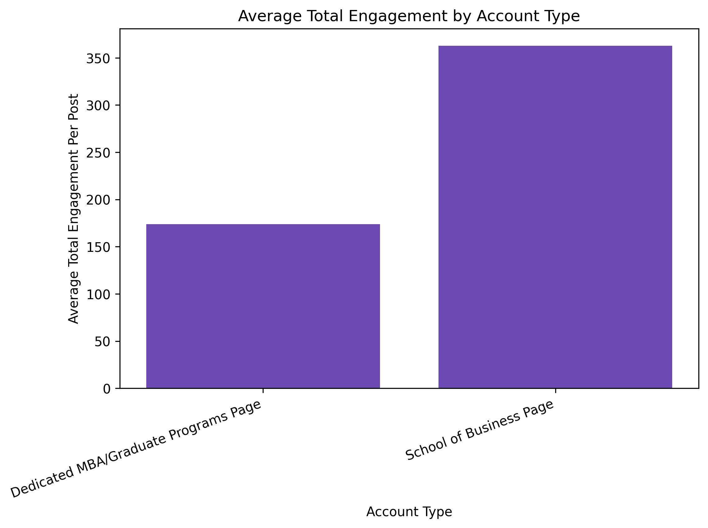
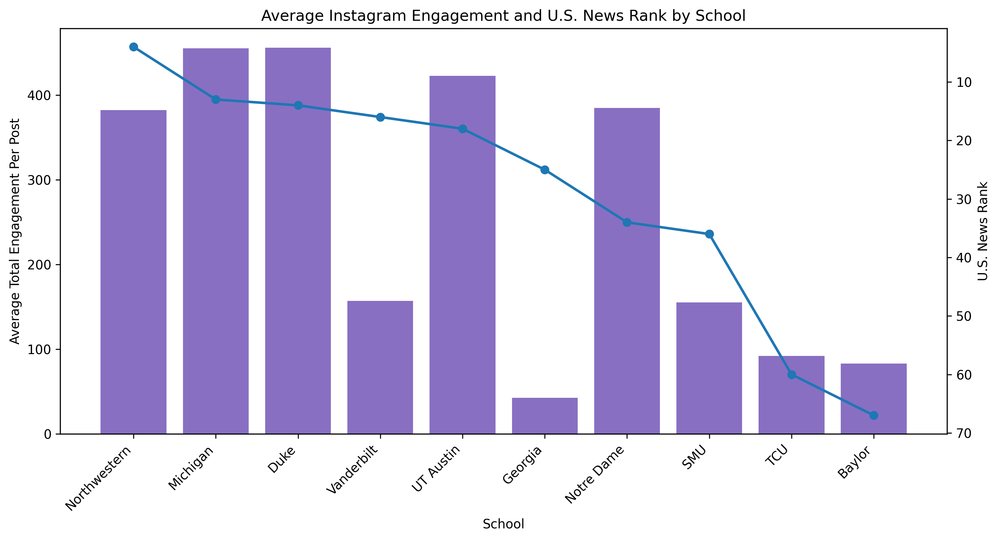

Project Findings
This project helped me see that schools do not tell the same story everywhere online. Instagram, LinkedIn, and business school websites each showed a different side of the school. The more I worked with the data, the more I realized that the platforms were not doing the same job.
Main Finding
The biggest thing I learned is that Instagram, LinkedIn, and websites all helped tell the story, but they told it in different ways. Instagram felt more personal and visual. LinkedIn felt more professional and achievement-focused. Websites felt more official and detailed.
At first, I was thinking about this project as a comparison between platforms. But as I worked through the posts, comments, websites, and engagement numbers, it started to feel more layered than that. The platforms were not just different places to post the same message. They were different ways for schools to build identity, credibility, and value.
The simplest way I would explain it is this: Instagram builds the feeling, LinkedIn builds credibility, and websites back everything up.
Instagram showed the personality side of the schools. It helped me see school pride, student life, events, community, visual style, and belonging.
LinkedIn showed the resume side of the schools. It focused more on careers, alumni, rankings, employers, leadership, and professional success.
Websites showed the official story. This is where schools explained the program, the value, the outcomes, and the reasons a student should choose them.
Finding One
Instagram helped me see how schools use visuals to create a feeling around their brand. A lot of the posts focused on school pride, campus life, events, student experiences, community, and moments that made the school feel active and connected.
I also noticed that general university accounts and business school accounts did not always feel the same. A general university account usually spoke to a bigger school community. A business school account usually felt more focused on programs, students, alumni, careers, admissions, and future opportunities.
This mattered because Instagram was not always the place where schools gave the deepest program details. Instead, it was the place where schools showed personality. It helped answer a different question: what does this school feel like online?
My takeaway from Instagram was that it is really strong for identity and connection, but it does not always tell the full program story by itself.
Finding Two
LinkedIn felt very different from Instagram. It was less about personality and more about proof. The posts were often connected to rankings, alumni success, faculty recognition, leadership, employer connections, student achievement, and career outcomes.
That made LinkedIn feel like the platform where schools were trying to show professional value. A lot of the posts were not just saying, “look at our school.” They were saying, “look at what our students, alumni, faculty, and partners are doing.”
This helped me understand why LinkedIn matters in this kind of project. It gives schools a way to connect their brand to the business world. Instagram may show what the school feels like, but LinkedIn shows what the school can help people become.
My takeaway from the LinkedIn posts was that LinkedIn works like a proof platform. It is where schools show outcomes, recognition, and professional credibility.
Finding Three
One thing that became clearer as the project developed was that the LinkedIn comments mattered. At first, I was mainly looking at engagement through likes, reposts, and comments as numbers. But once I looked closer at the actual comments, they added more context to the data.
A lot of the LinkedIn comments were short, but they still told me something. Many were congratulations, praise, school pride, or professional support. Even though they were not always long comments, they showed that people were willing to publicly respond to the school’s message in a professional space.
That changed how I looked at engagement. A like can happen quickly, but a comment takes more effort. The comments helped me see when people were not only noticing the post, but actually participating in the conversation around it.
My takeaway from the LinkedIn comments was that they gave the engagement numbers more meaning. They helped me see the response behind the numbers.
Finding Four
The website part of the project felt different from the social media part. Websites were not quick posts or feeds. They were where schools had to explain the full program story and prove why the program was worth a student’s time, money, and energy.
The strongest websites made the important information easy to find. I looked for things like career outcomes, rankings, return on investment, academics, admissions details, flexibility, student support, alumni networks, belonging, and hands-on learning.
This part was also more complicated than I expected because the websites were not all organized the same way. Some schools had clear MBA or graduate program pages. Other schools placed graduate information inside the larger business school website. That made the comparison harder, but it also became part of the finding.
If a student has to dig too hard to find important graduate program information, that affects the experience. The website structure itself becomes part of the message.
My takeaway from the websites was that a strong website needs more than good design. It needs to make the value of the program easy to understand and easy to find.
Finding Five
One question I had was whether account structure affected engagement. Some schools used a main School of Business Instagram account, while others used a dedicated MBA or graduate programs account. To compare them, I calculated average total engagement per post by adding likes and comments together.

I grouped the business school Instagram accounts into two account types for this comparison.
In this sample, the main School of Business pages had higher average total engagement per post than the dedicated MBA or graduate programs pages. This made sense to me because the main business school accounts are usually easier to find and probably connected to a larger audience.
The dedicated graduate accounts still have a purpose. They can speak more directly to MBA or graduate students, which is a strength. But they may also be harder for people to find. A prospective student may search for the main business school first and may not know that a smaller graduate account exists.
This finding changed how I looked at the engagement numbers. Higher engagement did not always mean better content. Sometimes it may have reflected a bigger account, a broader audience, or stronger visibility from the main business school brand.
My takeaway from the account comparison was that engagement needs context. The account itself can shape how much attention a post receives.
Finding Six
I also wanted to see whether higher-ranked schools automatically received more Instagram engagement. This was one of the more interesting parts of the project because the answer was not as simple as I expected.

Note: A lower U.S. News rank number means a higher-ranked school.
The graph showed that ranking and engagement did not line up perfectly. Some highly ranked schools, like Northwestern, Michigan, Duke, and UT Austin, had strong average engagement. But the pattern was not consistent across the full group.
Notre Dame had strong engagement even though it was ranked lower than several schools in the sample. Vanderbilt was highly ranked, but its average Instagram engagement was lower than some of the other schools. Georgia also had lower engagement even though it was not the lowest-ranked school in the group.
This showed me that prestige may help, but it does not guarantee attention. A school can have a strong ranking and still not have the highest engagement. Another school can rank lower and still perform well if the account has strong visibility, good content, or an audience that responds.
This also connects back to the account structure finding. Some schools were using main business school accounts, while others were using smaller MBA or graduate program accounts. That matters because a smaller account may naturally have less reach, even if the content is good.
My takeaway from this graph was that ranking matters, but it does not tell the whole story. Instagram engagement is also shaped by visibility, audience size, content style, school identity, and account structure.
Finding Seven
One of the biggest lessons from this project was that engagement numbers cannot be read by themselves. A high number of likes, comments, or reposts can be useful, but those numbers are shaped by a lot of other things.
A bigger account may naturally reach more people. A main business school account may get more traffic than a smaller graduate program account. A visual Instagram post may perform differently than a LinkedIn announcement. A ranking post may get a different kind of response than a post about student life or campus events.
Because of that, I treated engagement as one clue, not the whole answer. The goal was not just to find which school had the biggest number. The stronger question was what the numbers said when they were read with the platform, account type, and content.
The numbers mattered, but the story behind the numbers mattered more.
Final Takeaway
Overall, this project showed me that higher education marketing changes depending on the platform, the audience, and the account structure. Instagram helps schools create feeling and identity. LinkedIn helps schools build professional credibility. Websites give the details and proof behind the program.
The engagement comparisons added another important layer. Even strong content may perform differently depending on where it is posted, how large the audience is, and how easy the account is to find. A high-ranking school does not automatically receive the most engagement, and a smaller graduate account may have a harder time getting attention even if the content is useful.
The biggest thing I learned is that online marketing is not one single story. It is a layered story. Each platform adds something different, and the strongest schools are the ones that make those pieces work together.